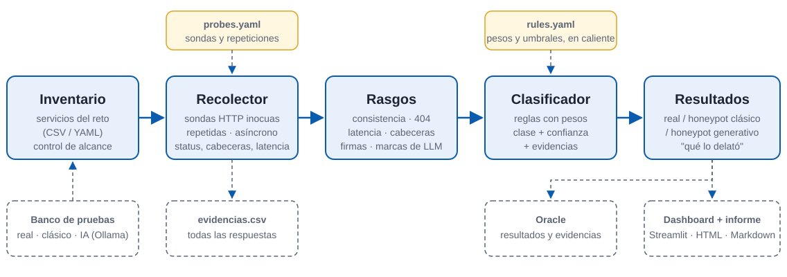

Clasificación automática y explicable de servicios web:
real · honeypot clásico · honeypot generativo
Equipo [nombre del equipo] · [Nombre 1], [Nombre 2], [Nombre 3], Javier Román
En la red hay [N] servicios. Algunos son trampas, y las nuevas trampas usan una IA que se inventa cada respuesta para parecer reales.
Servicio legítimo: responde de forma coherente y estable.
Cebo programado: respuestas fijas, banners por defecto.
Cebo con un LLM: contenido verosímil, pero inventado y cambiante.
Por qué importa a NICS: [confundir un cebo con un servicio real = decisiones de defensa equivocadas]

Preguntamos lo mismo varias veces y pedimos rutas que no existen: un servidor real responde 404; una IA se inventa la página. Cada decisión queda justificada con evidencias.
python -m kits.nics.run --targets … --scope …Plan B si falla el directo: vídeo de la demo (USB) y capturas en la diapositiva siguiente.
lt;img src="capturas/nics_dashboard.png" style="max-height:170px"Plan B si falla el directo: vídeo de la demo (USB) y capturas en la diapositiva siguiente.
gt;]Plan B si falla el directo: vídeo de la demo (USB) y esta captura.
| Qué delata a cada clase | Evidencia más frecuente |
|---|---|
| Honeypot generativo | [respuestas distintas a la misma petición · JSON inventado · latencia de segundos] |
| Honeypot clásico | [misma página para cualquier ruta · banner antiguo · sin cabecera Date] |
| Real | [404 en rutas inexistentes · respuestas deterministas] |
Cada clasificación es reproducible y explicable.
¿Preguntas?
Código, informe y evidencias: [enlace o "en la entrega del Campus Virtual"]